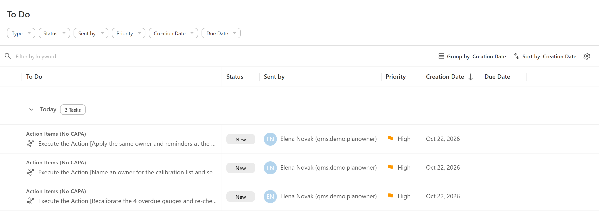
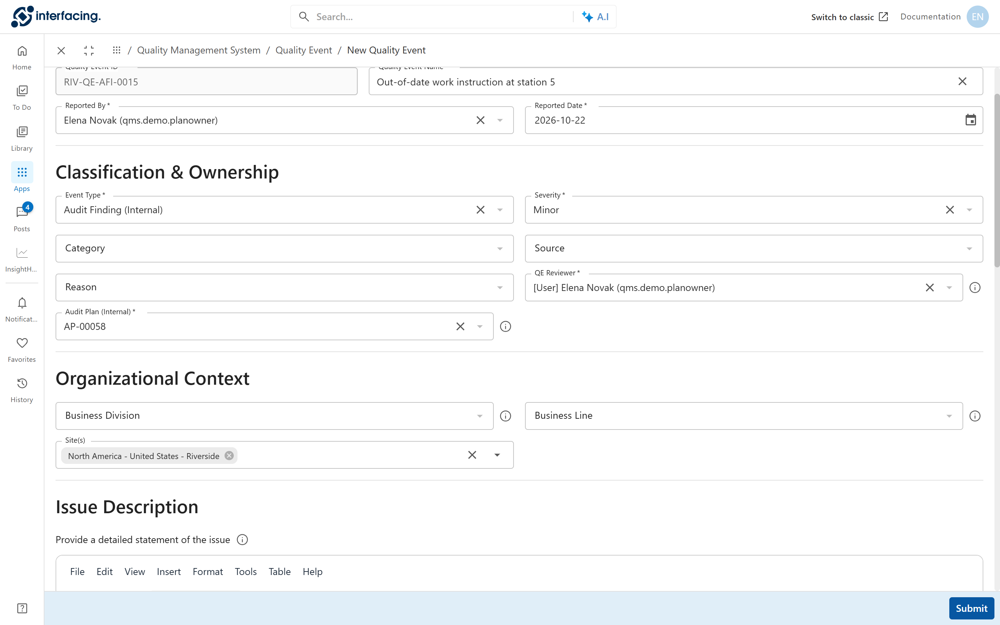
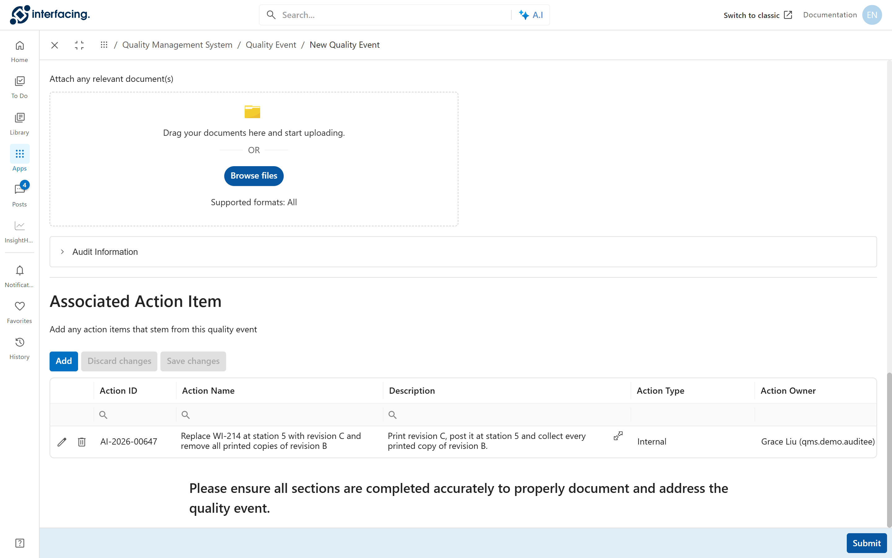

The work arrives
Once Elena approves the CAPA plan, Jonas finds three new jobs on his list.
Each action item is a task Execute the Action in the owner's To Do.

1234- The process name reads Action Items (No CAPA) for every action item, including those that come from a CAPA.
- The subject carries the action name.
- Sent by: who sent the action out.
- Priority of the task.
Do the work and say what was done
Jonas names an owner for the calibration list and sets the reminders. He writes down what he did, attaches the proof, and says whether the fix is permanent.
The task opens the action item. Enter your findings, near the top, is required. It records what was done.
 1234
1234- Evidence of Action Completion: files that prove the work.
- Resolution, required: Permanent, Temporary or Work Around.
- Describe Evidence of Effectiveness, optional.
- Action Complete sends it for sign-off. Refuse Action returns it to the person who created it.
An owner who needs more time can use Request an Extension on the action. One extension is allowed per action.
Sign it off
Ahmed checks each result. A fix that is done badly goes back to Jonas.
The action completion reviewer gets Sign-off on the action.
 123
123- Action ID.
- Type: correction, corrective or preventive.
- Approve Action completes it. Reject Action sends it back to the owner as Action Not Complete.
When every action of a CAPA is signed off, the CAPA moves on to its effectiveness check, as chapter 12 shows.
Open a quality event
The old work instruction at station 5 is a single slip. Elena records it as a quality event, linked to the audit.
Open Quality Event > New Quality Event. On the demo system, the audit hand-over created nothing, so Elena opened it by hand.

1234- Event Type: Audit Finding (Internal).
- Severity: Minor.
- QE Reviewer: who decides what happens next.
- Audit Plan (Internal) links it to the audit.
Add the fix
The fix is a correction only. Grace's team puts revision C up and collects the old copies, and Elena signs it off.
Lower on the same form, Associated Action Item has an Add button. It opens the same action item form as in a CAPA.

1234- Audit Information, filled from the audit.
- Add creates an action item.
- The correction, owned by Grace.
- Submit sends the quality event for review.
Decide how much work it needs
Elena reviews the event. One station, one copy, and document control works everywhere else. It needs the correction and nothing more.
The QE reviewer gets Review the Issue.
 1234
1234- Severity.
- QE Reviewer.
- The audit it came from.
- The five choices in Task Resolution, below.
| Choice | When |
|---|---|
| Correct Issue Immediately (No Action) | already fixed, nothing to track |
| Correct Issue Immediately with Actions | a quick fix that needs action items, as here |
| Gather More Details, associate risk(s) and create actions(s) | it needs a closer look; this route can lead to a CAPA |
| No Issue (Close QE) | there is no real problem |
| Send for modification | the event needs changes first |
Grace then gets Execute the Action and Elena Sign-off on the action, as above.
Common mistakes
- Clicking Action Complete without Enter your findings or a Resolution. The product refuses the task.
- Marking a temporary fix as Permanent. The effectiveness check then looks at the wrong thing.
- Signing off an action without opening the evidence.
- Sending a pattern of slips through quality events one by one. The same slip twice needs a CAPA.